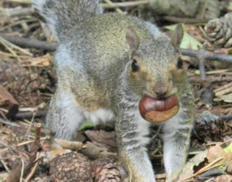
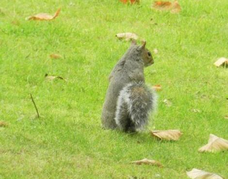
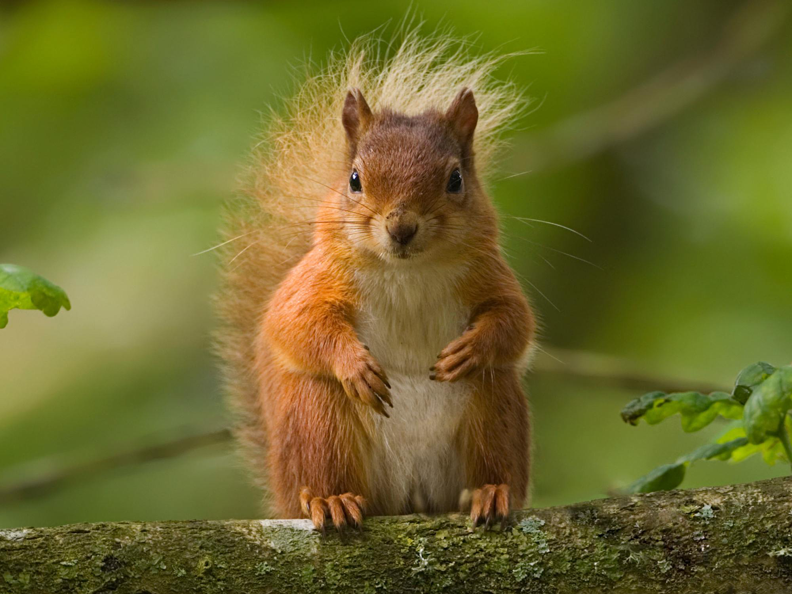
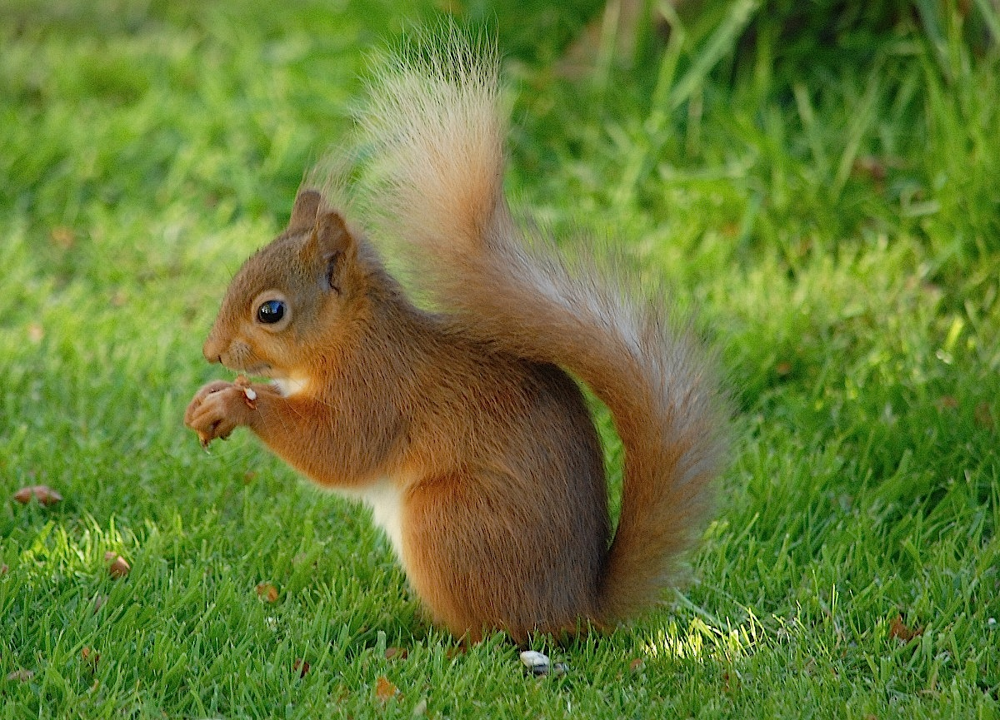

Σκίουρος
Υπάρχουν πολλά διαφορετικά είδη σκιούρου που βρίσκονται στην Αμερική, την Ευρώπη, την Ασία και την Αφρική.O σκίουρος έχει μήκος 20-28 cm, ύψος 5-7 cm, ουρά 14-24 cm και βάρος 230-280 gr. Έχει ρύγχος κοντό, μάτια σκούρα καφέ, αυτιά μέσου μεγέθους όχι οξύληκτα, στα άκρα των οποίων κατά τη διάρκεια του χειμώνα εμφανίζονται μικροί θύσανοι από μακριές τρίχες. Τα πισινά πόδια είναι μακρύτερα από τα μπροστινά ενώ η ουρά είναι μακριά και φουντωτή. Η ονομασία του γένους Sciurus προέρχεται από τις λέξεις «σκιά» και «ουρά» και σημαίνει ότι το ζώο κάθεται στην σκιά της ουράς του.
Το τρίχωμα του είναι μαλακό και πυκνό. Ο χρωματισμός του το καλoκαίρι είναι γκριζοκόκκινος στο πάνω μέρος και λευκός στο κάτω, ενώ το χειμώνα αυτός γίνεται σκουρότερος. Τα πέλματα των ποδιών το χειμώνα καλύπτονται με τρίχωμα ενώ το θέρος είναι γυμνά.
Τα πιο συνηθισμένα είδη σκίουρου είναι ο Σκίουρος Αλεπού (S. niger - Σκίουρος ο μαύρος), ο Ανατολικός Γκρι Σκίουρος (S. carolinensis - Σκίουρος της Καρολίνας), ο Δυτικός Γκρι Σκίουρος (S. griseus - Σκίουρος ο φαιός), ο Σκίουρος του Ντάγκλας (Tamiasciurus douglasii - Ταμιασκίουρος του Ντάγκλας) και ο Αμερικάνικος Κόκκινος Σκίουρος (T. hudsonicus Ταμιασκίουρος του Χάντσον). Υπάρχουν πάνω από 270 αναγνωρισμένα είδη.
Οι σκίουροι είναι πολυγαμικοί. Ο θηλυκός σκίουρος των ειδών που πέφτουν σε χειμέρια νάρκη έχει οίστρο λίγες βδομάδες μετά τη λήξη της περιόδου αυτής, και ενδιαφέρεται για ζευγάρωμα για λίγες ώρες μέχρι μία μέρα, ανάλογα με το είδος. Αυτοί οι σκίουροι ζευγαρώνουν μόνο μία φορά το χρόνο, αργά το χειμώνα ή στις αρχές της άνοιξης. Άλλα είδη αναπαράγονται και δεύτερη φορά το καλοκαίρι.
Πολλοί σκίουροι του εδάφους γεννάνε από έξι έως εννέα μικρά, σε αντιδιαστολή με αυτούς με κατοικία τα δέντρα, οι οποίοι έχουν μια γέννα με δύο έως τέσσερα μικρά. Οι νεογέννητοι έχουν κλειστά τα μάτια και δεν έχουν καθόλου τρίχωμα. Μετά από ένα μήνα περίπου, τα μάτια τους ανοίγουν, και λίγες μέρες ή βδομάδες αργότερα, (ο χρόνος ποικίλει για τα διάφορα είδη), μπορούν να βγαίνουν μόνα τους από τη φωλιά.
Οι σκίουροι έχουν ως διατροφή τρώνε τα καρύδια, τα μούρα, τους βλαστούς και περιστασιακά τα έντομα. Μερικοί σκίουροι του εδάφους πέφτουν σε χειμερία νάρκη το χειμώνα, αν και ξυπνάνε κάθε τόσο, παραμένοντας όμως στη φωλιά τους. Πριν ξεκινήσει αυτή η φάση, τρώνε υπερβολικά για να κερδίσουν βάρος. Μερικοί μάλιστα διπλασιάζουν το βάρος τους! Οι πιο μικροί σκίουροι όπως αυτοί του είδους Tamias, παχαίνουν αλλά όχι αρκετά για να τα καταφέρουν χωρίς πρόσθετες προμήθειες, που τις μαζεύουν το φθινόπωρο και τις βάζουν στη φωλιά τους κάτω από το έδαφος. Επιλέγουν φαΐ με ακόρεστα λιπαρά οξέα όπως το λινελαϊκό οξύ για αυτό το σκοπό, το οποίο χωνεύεται κατά την περίοδο της χειμερίας νάρκης όταν η σωματική θερμοκρασία τους είναι χαμηλή. Τα κορεσμένα λιπαρά οξέα δεν χωνεύονται υπό τέτοιες συνθήκες.
Κυνήγι
Όταν διαπιστώνετε η παρουσία σκίουρων σε μια περιοχή, είναι εύκολο να πιάσετε μερικούς από αυτούς. Ο πιο αποτελεσματικός τρόπος είναι να παρακινήσετε το σκίουρο να κατέβει κάτω από ένα στύλο που έχετε τοποθετήσει για το σκοπό αυτό. Ψάξτε για σημάδια στην βάση ενός δέντρου για να βεβαιωθείτε ότι κατοικούν εκεί σκίουροι -φλόυδες από κωνοφόρα πεύκα ή από καρύδια και κομμάτια από μανιτάρια αποτελούν καλές ενδείξεις. Τοποθετήστε σε ένα στύλο μήκους 4-5 μ. περίπου τρεις εώς τέσσερεις θηλιές, σε ίσες αποστάσεις. Ακολούθως στηρίξτε το στύλο αυτό σε ένα δέντρο, σφηνονωντάς τον σε μια διχάλα, ακριβώς κάτω από την γραμμή του φυλλώματος του δέντρου. Όποιος σκίουρος ανέβει στο στύλο για να πάει στο δέντρο του, θα πεσει μέσα στις θηλιές και θα πιαστεί. Ένας σκίουρος αγωνιζόμενος για την ζωή του θα προσελκύσει συνήθως την προσοχή των άλλων σκίουρων, οι οποίοι θα πάνε να δουν τι συμβαίνει και έτσι θα παγιδευτούν και οι ίδιοι.|  |  |
 |